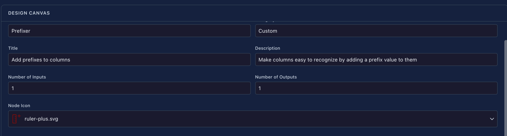
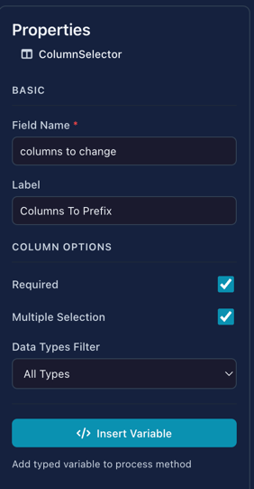
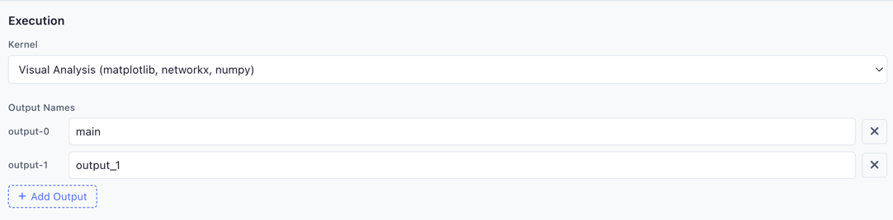
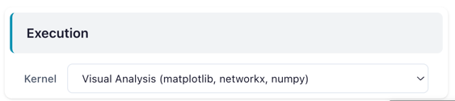

Node Designer
Create custom transformation nodes visually—no Python files required.
The Node Designer lets you build reusable nodes by dragging UI components onto a canvas, configuring their properties, and writing transformation logic. Your custom nodes appear in the node palette alongside built-in nodes.
 The Node Designer with a "Prefixer" node being created
The Node Designer with a "Prefixer" node being created
Quick Start
- Open Node Designer from the sidebar menu
- Set your node's name and category
- Drag components from the left panel into a section
- Write your transformation code in the Process Method editor
- Click Save to add your node to the palette
Restart Required
After saving a new node, refresh cmd/cntr + r Flowfile to load it into the node palette.
Interface Overview
The Node Designer uses a three-panel layout:
-
Component Palette (Left)
Draggable UI components for building your node's settings interface
-
Design Canvas (Center)
Visual preview of your node's configuration panel with metadata settings
-
Properties Panel (Right)
Configuration options for the currently selected component
Design Canvas
The center panel is where you define your node's identity and structure.
Node Metadata

| Field | Description | Example |
|---|---|---|
| Node Name | Internal identifier (no spaces) | Prefixer |
| Category | Where it will appears in the palette | Custom, Text, Transform |
| Title | Display name shown on the node | Add prefixes to columns |
| Description | Tooltip text explaining the node | Make columns easy to recognize... |
| Number of Inputs | How many input connections | 1 (most common) |
| Number of Outputs | How many output connections | 1 (most common) |
| Node Icon | Visual identifier in the palette | Select from icon library |
Features Under Development
Category and Number of Outputs are currently under development. For now, custom nodes will appear in the default category and support single outputs.
UI Sections
Sections group related components together. Each section:
- Has a Variable Name (used in code, e.g.,
main_section) - Has a Display Title (shown in UI, e.g., "Section 1")
- Can contain multiple components
- Appears as a collapsible group in the node's settings panel
Click + Add Section to create a new section, then drag components into it.

Component Palette
Drag these components from the left panel into your sections:
Input Components
| Component | Use Case | Value Type |
|---|---|---|
| Text Input | Names, patterns, custom strings | str |
| Numeric Input | Thresholds, counts, percentages | int or float |
| Toggle Switch | Enable/disable features | bool |
| Single Select | Choose one option from a list | str |
| Slider | Select a value within a range | int or float |
Column Components
| Component | Use Case | Value Type |
|---|---|---|
| Column Selector | Pick one column from input data | str |
| Multi Select | Select multiple columns | list[str] |
| Column Action | Column with operation choice | dict |
Special Components
| Component | Use Case | Value Type |
|---|---|---|
| Secret Selector | API keys, passwords, credentials | str (SecretStr) |
No Secret Usage Validation
There is currently no scanning to verify that secrets are handled securely in your process code. You are responsible for ensuring secrets are not logged, exposed in error messages, or written to output data.
Properties Panel

When you select a component on the canvas, configure it in the right panel.
Basic Properties
All components share these basic properties:
| Property | Description |
|---|---|
| Field Name | Internal identifier used in code (e.g., columns_to_change) |
| Label | Display text shown to users (e.g., "Columns To Prefix") |
Additional options vary depending on the selected UI component (e.g., min/max for Numeric Input, data type filters for Column Selector, options list for Single Select).
Click Insert Variable to copy the accessor path for use in your process code.
Process Method
The bottom section contains the code editor where you write your transformation logic.

Function Signature
def process(self, *inputs: pl.LazyFrame) -> pl.LazyFrame:
Your function receives Polars LazyFrames and must return a LazyFrame.
Accessing Component Values
Use self.settings_schema to access values from your UI components:
# Pattern: self.settings_schema.<section_name>.<component_name>.value
# Get text input value
prefix_text: str = self.settings_schema.main_section.prefix_text.value
# Get selected columns (list)
columns_to_change: list[str] = self.settings_schema.main_section.columns_to_change.value
# Get numeric value
threshold: float = self.settings_schema.options.threshold.value
# Get toggle state
is_enabled: bool = self.settings_schema.options.is_enabled.value
Use Insert Variable
Click Insert Variable in the Properties panel to automatically insert the correct accessor path for any component.
Complete Example
Here's a full example that adds a prefix to selected column names:
def process(self, *inputs: pl.LazyFrame) -> pl.LazyFrame:
# Get the first input LazyFrame
lf = inputs[0]
prefix_text: str = self.settings_schema.main_section.prefix_text.value
columns_to_change: list[str] = self.settings_schema.main_section.columns_to_change.value
# Build expressions: rename selected columns, keep others unchanged
exprs: list[pl.Expr] = [
pl.col(col_name).alias(f"{prefix_text}_{col_name}")
if col_name in columns_to_change else pl.col(col_name)
for col_name in lf.columns
]
return lf.select(exprs)
Generated Code
When you click Preview, the Node Designer shows the complete Python class that will be generated:
# Auto-generated custom node
# Generated by Node Designer
import polars as pl
from flowfile_core.flowfile.node_designer import (
CustomNodeBase, Section, NodeSettings, TextInput, ColumnSelector
)
# Section 1
main_section = Section(
title="Section 1",
prefix_text=TextInput(
label="PrefixText",
),
columns_to_change=ColumnSelector(
label="Columns To Prefix",
required=True,
multiple=True,
),
)
class PrefixerSettings(NodeSettings):
main_section: Section = main_section
class Prefixer(CustomNodeBase):
node_name: str = "Prefixer"
node_category: str = "Custom"
node_icon: str = "ruler-plus.svg"
title: str = "Add prefixes to columns"
intro: str = "Make columns easy to recognize by adding a prefix value to them"
number_of_inputs: int = 1
number_of_outputs: int = 1
settings_schema: PrefixerSettings = PrefixerSettings()
def process(self, *inputs: pl.LazyFrame) -> pl.LazyFrame:
# Get the first input LazyFrame
lf = inputs[0]
prefix_text: str = self.settings_schema.main_section.prefix_text.value
columns_to_change: list[str] = self.settings_schema.main_section.columns_to_change.value
exprs: list[pl.Expr] = [
pl.col(col_name).alias(f"{prefix_text}_{col_name}")
if col_name in columns_to_change else pl.col(col_name)
for col_name in lf.columns
]
return lf.select(exprs)
This generated class is what gets saved to your user-defined nodes directory.
Kernel Execution
Custom nodes can run their process method inside a Docker-based kernel instead of the local Polars engine. This is useful when your node needs third-party libraries (e.g. scikit-learn, XGBoost), requires more isolation, or produces artifacts.
Enabling Kernel Mode
- In the Node Metadata section, check Require Kernel Execution
Enabling kernel execution in the Node Designer metadata section
- A new Execution section appears below the metadata. Select a kernel from the dropdown.
 The kernel execution section showing the kernel dropdown and output name configuration
- Configure Output Names — when a kernel is selected, you can define multiple named outputs (e.g.
main,predictions,metrics). Each output name maps to a separate output handle on the node.
Create kernels first
Kernels must be created and started in the Kernel Manager before they appear in the dropdown. If no kernels are available, the dropdown only shows "Local (default)".
How It Works
When kernel execution is enabled:
- The Node Designer auto-generates a kernel script from your
processmethod - Your
self.settings_schemavalues are baked into the script as a lightweight proxy - Inputs are read via
flowfile.read_input()instead of being passed as LazyFrame arguments - Return values are published via
flowfile.publish_output()for each named output - The full
flowfileAPI is available — artifacts, display, logging, and more
Your process method code stays the same. The self.settings_schema pattern works identically in kernel mode — the generated script creates proxy classes that replicate the same access pattern.
Custom Node with Kernel — Using It in a Flow
When you use a kernel-enabled custom node in a flow, the node settings panel shows a Kernel dropdown to select (or change) which kernel runs the node.
 A kernel-enabled custom node in a flow, showing the kernel selector in the node settings panel
Example: ML Scoring Node
Here's a process method that trains a model and publishes it as an artifact:
def process(self, *inputs: pl.LazyFrame) -> pl.LazyFrame:
import flowfile
from sklearn.ensemble import RandomForestClassifier
lf = inputs[0]
target_col: str = self.settings_schema.main_section.target_column.value
df = lf.collect()
X = df.drop(target_col).to_numpy()
y = df[target_col].to_numpy()
model = RandomForestClassifier(n_estimators=100).fit(X, y)
flowfile.publish_artifact("trained_model", model)
flowfile.log_info(f"Model trained with accuracy: {model.score(X, y):.3f}")
predictions = model.predict(X)
return df.with_columns(pl.Series("prediction", predictions)).lazy()
For more details on the flowfile API available inside kernels, see Kernel Execution.
Toolbar Actions
| Button | Shortcut | Description |
|---|---|---|
| Help | — | Open documentation modal |
| Browse | — | Load an existing node definition |
| New | — | Create a blank node definition |
| Preview | — | View the generated Python code |
| Save | — | Save the node to your user-defined nodes directory |
Programmatic Alternative
For more control or version-controlled node definitions, you can create nodes as Python files. See Creating Custom Nodes for the code-based approach.
Related Documentation
- Kernel Execution — Run code in isolated Docker containers
- Building Flows — Using nodes in workflows
- Transform Nodes — Built-in transformation nodes
- Creating Custom Nodes — Python-based node creation